lorenz_partial_100d_7lat_additive_mse_p30__lc_sweepProject: Lorenz_INDpartial_N100_D1_NormTrue_T7__JacobianODE
Launched: 2026-04-15T15:47:18Z
Completed: 2026-04-16T01:35:13Z
Outcome: complete_clean
Git: latent-JacobianODE @ 325ada0
Expected runs: 9
lorenz_partial_100d_7lat_additive_mse_p30Description
Extends lorenz_partial_100d_7lat_additive_mse (p10) to prediction_steps=30, seq_length=45. Still most_recent recon, kl_null=0. LC weight swept.
Hypothesis
The p10 100-delay / 7-latent sweep under-represented strong contraction (λ_min ≈ −6 vs empirical ~−14). A longer rollout gives the dynamics MLP stronger pressure to learn correct integration over multiple Lyapunov times, which may pull the contraction spectrum closer to the empirical.
Success criteria
Swept axes (1): training.lightning.loop_closure_weight
Chosen run (by best_traj_loss): 9xnjqjmp — traj_loss=0.00006, MASE=0.1626, R²=0.9998, LC loss=1.412, epoch=110.0
Swept-axis values at chosen run: training.lightning.loop_closure_weight=0
Runs analyzed: 9 (expected 9)
| run_idx | run_id | training.lightning.loop_closure_weight |
best_traj_loss | best_MASE | R² | LC loss | epoch |
|---|---|---|---|---|---|---|---|
| 0 | 9xnjqjmp |
0 | 0.00006 | 0.1626 | 0.9998 | 1.412 | 110.0 |
| 1 | awa884vs |
1.0e-06 | 0.00006 | 0.1669 | 0.9998 | 1.245 | 105.0 |
| 2 | 2du17wmt |
1.0e-05 | 0.00006 | 0.1788 | 0.9998 | 0.413 | 110.0 |
| 3 | zkjscsm3 |
1.0e-04 | 0.00007 | 0.1901 | 0.9998 | 0.070 | 100.0 |
| 4 | lvr4wawa |
0.001 | 0.00013 | 0.2576 | 0.9996 | 0.009 | 89.0 |
| 5 | yb5zx52m |
0.01 | 0.00032 | 0.2948 | 0.9990 | 0.002 | 99.0 |
| 6 | 2pcaimda |
0.1 | 0.00032 | 0.3464 | 0.9990 | 0.000 | 107.0 |
| 7 | m31ywv0g |
1 | 0.00082 | 0.6340 | 0.9975 | 0.000 | 103.0 |
| 8 | idz7flku |
10 | 0.00086 | 0.6987 | 0.9974 | 0.000 | 98.0 |
| Criterion | Verdict | Note |
|---|---|---|
| λ_min moves noticeably more negative than p10 baseline (~-6) | Unknown | |
| val/trajectory_r2 > 0.9 at best LC | Pass | Best R² = 0.9998; threshold > 0.9 |
| Σλ_i moves from ~-20 toward empirical ~-14 | Unknown |
Automated verdicts use simple numeric-threshold parsing and may mis-classify qualitative criteria. The Discussion section below takes precedence.
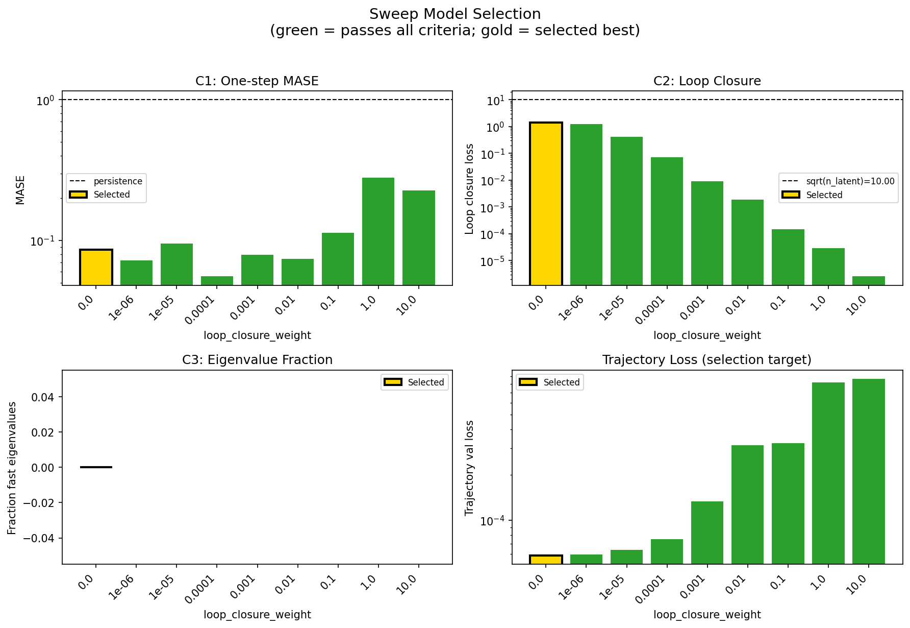
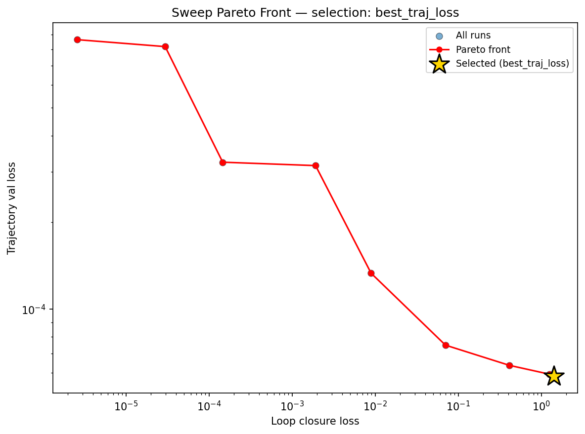
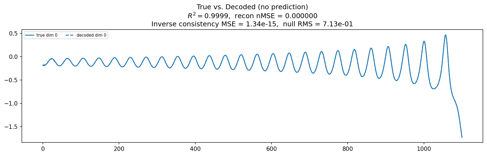
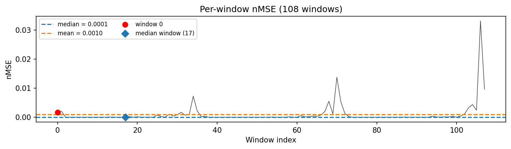
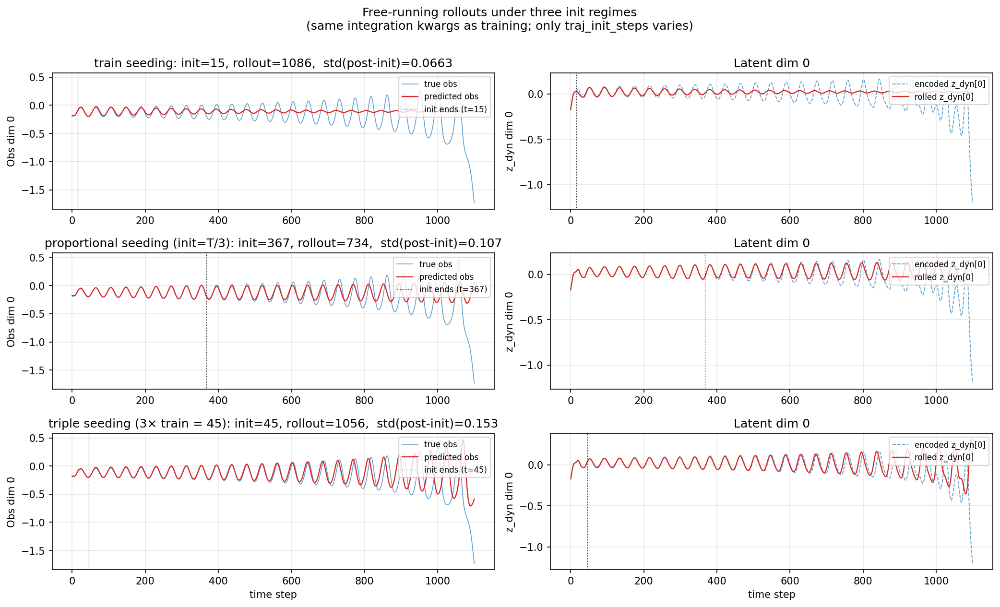
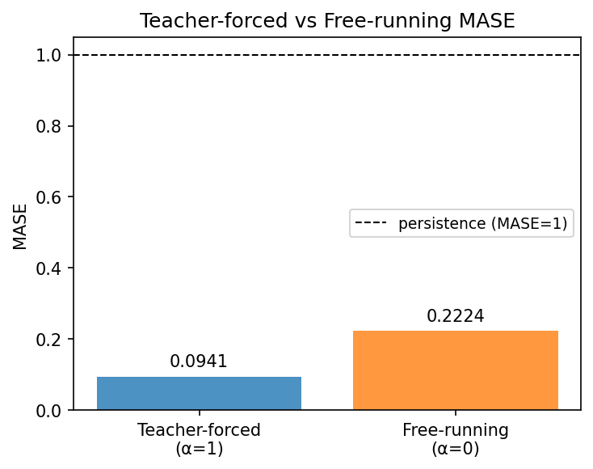
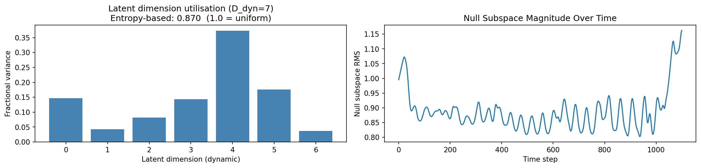
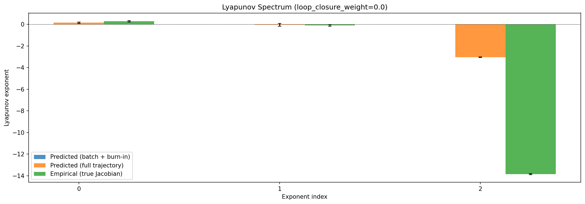
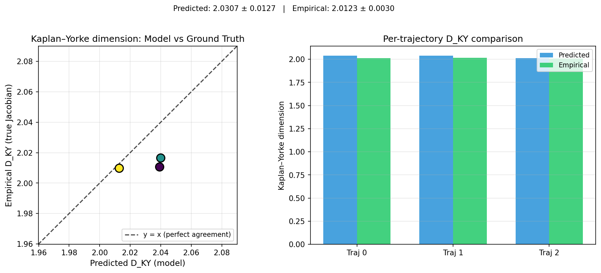
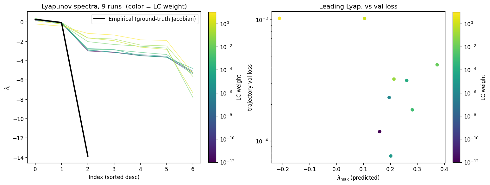
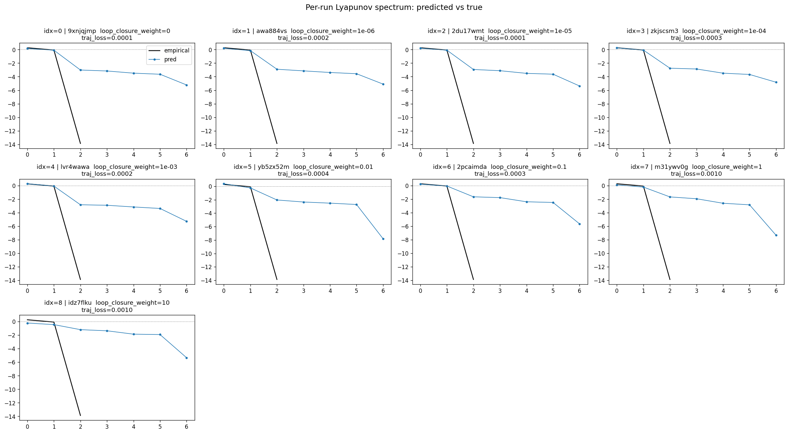
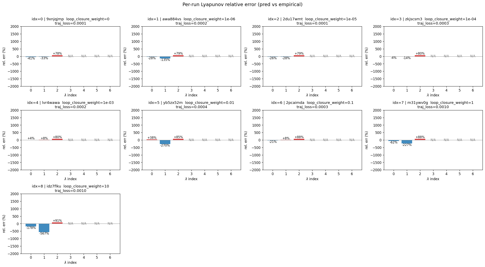
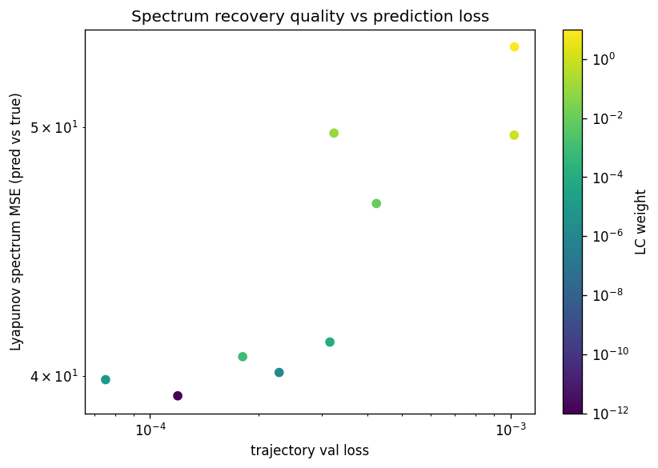
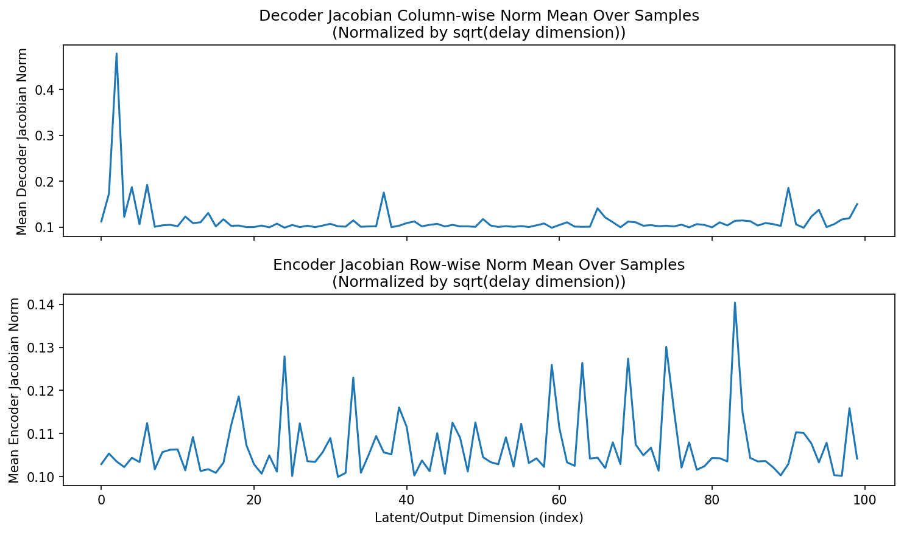
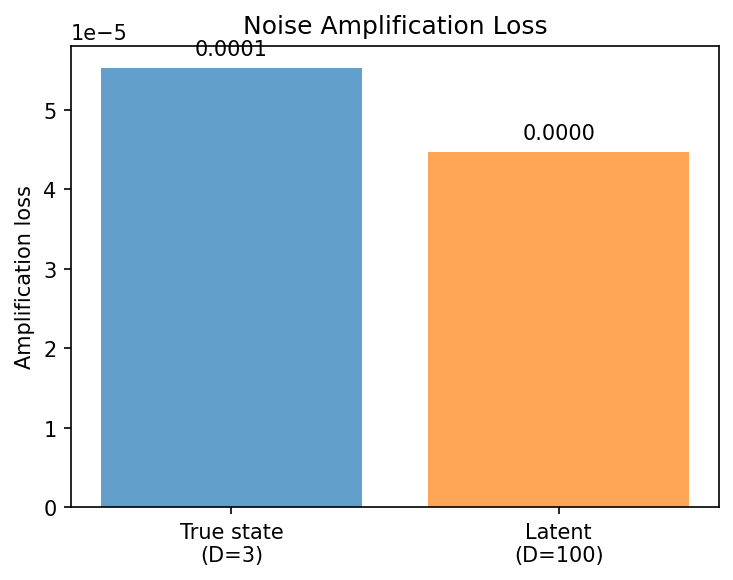
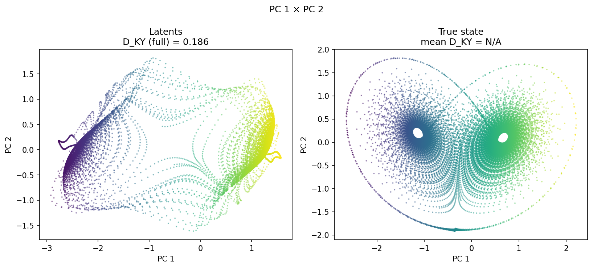
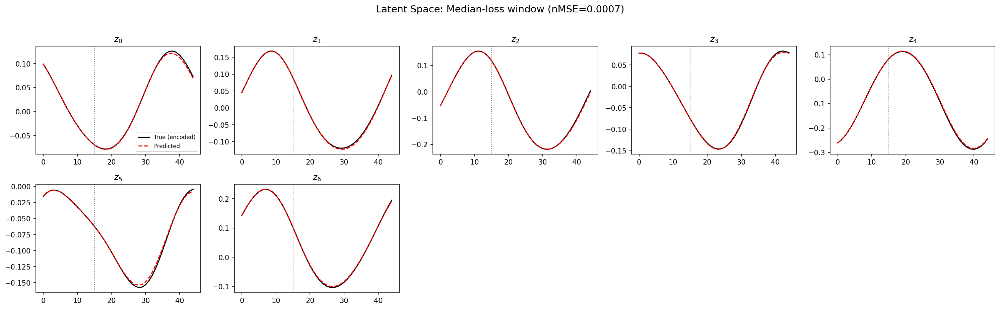
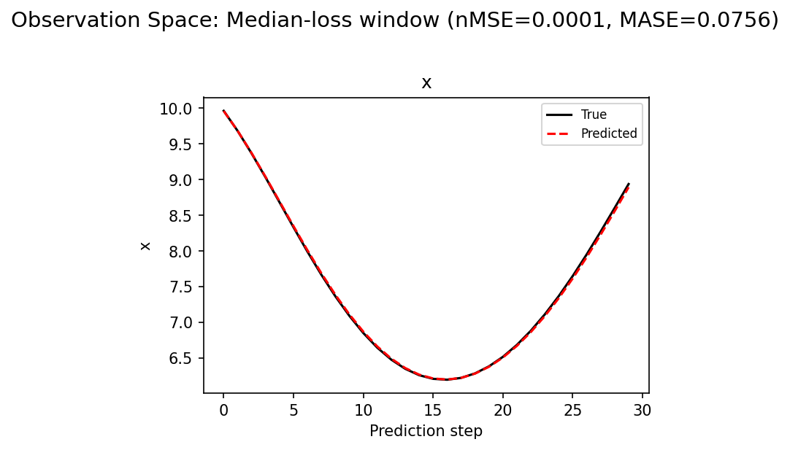
(to be written)
run_analytics stdoutrun_analyticsNo run_id provided — selecting best run from group 'lorenz_partial_100d_7lat_additive_mse_p30__lc_sweep' ...
Found 9 total runs in JacobianODE/Lorenz_INDpartial_N100_D1_NormTrue_T7__JacobianODE (group=lorenz_partial_100d_7lat_additive_mse_p30__lc_sweep)
All runs (state, loop_closure_weight, tangent_entropy_weight, kl_dyn_weight):
9xnjqjmp: state=finished, lc=0.0, te=0.0, kl_dyn=0.0
awa884vs: state=finished, lc=1e-06, te=0.0, kl_dyn=0.0
2du17wmt: state=finished, lc=1e-05, te=0.0, kl_dyn=0.0
zkjscsm3: state=finished, lc=0.0001, te=0.0, kl_dyn=0.0
lvr4wawa: state=finished, lc=0.001, te=0.0, kl_dyn=0.0
yb5zx52m: state=finished, lc=0.01, te=0.0, kl_dyn=0.0
2pcaimda: state=finished, lc=0.1, te=0.0, kl_dyn=0.0
m31ywv0g: state=finished, lc=1.0, te=0.0, kl_dyn=0.0
idz7flku: state=finished, lc=10.0, te=0.0, kl_dyn=0.0
slurm_timeout_min not found in any run config — falling back to 180 min
Including 9xnjqjmp (lc=0.0): use_all_runs=True (state=finished)
Including awa884vs (lc=1e-06): use_all_runs=True (state=finished)
Including 2du17wmt (lc=1e-05): use_all_runs=True (state=finished)
Including zkjscsm3 (lc=0.0001): use_all_runs=True (state=finished)
Including lvr4wawa (lc=0.001): use_all_runs=True (state=finished)
Including yb5zx52m (lc=0.01): use_all_runs=True (state=finished)
Including 2pcaimda (lc=0.1): use_all_runs=True (state=finished)
Including m31ywv0g (lc=1.0): use_all_runs=True (state=finished)
Including idz7flku (lc=10.0): use_all_runs=True (state=finished)
Found 9 effectively-done sweep runs:
loop_closure_weight=0.0, tangent_entropy_weight=0.0, kl_dyn_weight=0.0 -> run_id=9xnjqjmp
loop_closure_weight=1e-06, tangent_entropy_weight=0.0, kl_dyn_weight=0.0 -> run_id=awa884vs
loop_closure_weight=1e-05, tangent_entropy_weight=0.0, kl_dyn_weight=0.0 -> run_id=2du17wmt
loop_closure_weight=0.0001, tangent_entropy_weight=0.0, kl_dyn_weight=0.0 -> run_id=zkjscsm3
loop_closure_weight=0.001, tangent_entropy_weight=0.0, kl_dyn_weight=0.0 -> run_id=lvr4wawa
loop_closure_weight=0.01, tangent_entropy_weight=0.0, kl_dyn_weight=0.0 -> run_id=yb5zx52m
loop_closure_weight=0.1, tangent_entropy_weight=0.0, kl_dyn_weight=0.0 -> run_id=2pcaimda
loop_closure_weight=1.0, tangent_entropy_weight=0.0, kl_dyn_weight=0.0 -> run_id=m31ywv0g
loop_closure_weight=10.0, tangent_entropy_weight=0.0, kl_dyn_weight=0.0 -> run_id=idz7flku
n_dims=100, n_latent=100, n_dyn=7, dt=0.0150
run=9xnjqjmp: DiagnosticMetrics(one_step_mase=0.08590328693389893, loop_closure_loss=1.4116860628128052, fast_eigenvalue_fraction=0.0, trajectory_val_loss=5.843710096087307e-05) (from cache, n_batches=100)
run=awa884vs: DiagnosticMetrics(one_step_mase=0.07256656140089035, loop_closure_loss=1.245060682296753, fast_eigenvalue_fraction=0.0, trajectory_val_loss=5.9367011999711394e-05) (from cache, n_batches=100)
run=2du17wmt: DiagnosticMetrics(one_step_mase=0.09526988118886948, loop_closure_loss=0.412641704082489, fast_eigenvalue_fraction=0.0, trajectory_val_loss=6.370167102431878e-05) (from cache, n_batches=100)
run=zkjscsm3: DiagnosticMetrics(one_step_mase=0.055645253509283066, loop_closure_loss=0.07005464285612106, fast_eigenvalue_fraction=0.0, trajectory_val_loss=7.488905248465016e-05) (from cache, n_batches=100)
run=lvr4wawa: DiagnosticMetrics(one_step_mase=0.07911882549524307, loop_closure_loss=0.008914769627153873, fast_eigenvalue_fraction=0.0, trajectory_val_loss=0.00013317209959495813) (from cache, n_batches=100)
run=yb5zx52m: DiagnosticMetrics(one_step_mase=0.07385517656803131, loop_closure_loss=0.00191215006634593, fast_eigenvalue_fraction=0.0, trajectory_val_loss=0.0003150587435811758) (from cache, n_batches=100)
run=2pcaimda: DiagnosticMetrics(one_step_mase=0.1133987307548523, loop_closure_loss=0.0001458602346247062, fast_eigenvalue_fraction=0.0, trajectory_val_loss=0.0003237242344766855) (from cache, n_batches=100)
run=m31ywv0g: DiagnosticMetrics(one_step_mase=0.2804737985134125, loop_closure_loss=2.9577699024230242e-05, fast_eigenvalue_fraction=0.0, trajectory_val_loss=0.0008164768805727363) (from cache, n_batches=100)
run=idz7flku: DiagnosticMetrics(one_step_mase=0.22761313617229462, loop_closure_loss=2.5641359115979867e-06, fast_eigenvalue_fraction=0.0, trajectory_val_loss=0.0008632524404674768) (from cache, n_batches=100)
Ranking method: best_traj_loss
Best run ID: 9xnjqjmp
Best loop_closure_weight: 0.0
Best tangent_entropy_weight: 0.0
Best kl_dyn_weight: 0.0
Best traj loss: 0.000058
Criteria applied: ['C1', 'C2', 'C3']
Surviving: 9 / 9
Auto-selected run_id: 9xnjqjmp
======================================================================
PARETO FRONTIER RUNS (9 runs)
======================================================================
Run ID LC Loss Traj Val Loss
------------ -------------- --------------
idz7flku 0.000003 0.000863
m31ywv0g 0.000030 0.000816
2pcaimda 0.000146 0.000324
yb5zx52m 0.001912 0.000315
lvr4wawa 0.008915 0.000133
zkjscsm3 0.070055 0.000075
2du17wmt 0.412642 0.000064
awa884vs 1.245061 0.000059
9xnjqjmp 1.411686 0.000058 <-- selected
======================================================================
RANKING METHOD COMPARISON (over 9 survivors)
======================================================================
Method Run ID LC Loss Traj Val Loss
---------------------- ------------ -------------- --------------
best_traj_loss 9xnjqjmp 1.411686 0.000058 <-- active
pareto_knee 2pcaimda 0.000146 0.000324
geo_rank 9xnjqjmp 1.411686 0.000058
minimax_rank lvr4wawa 0.008915 0.000133
geo_log_score 9xnjqjmp 1.411686 0.000058
minimax_log_score lvr4wawa 0.008915 0.000133
======================================================================
Loading run 9xnjqjmp from JacobianODE/Lorenz_INDpartial_N100_D1_NormTrue_T7__JacobianODE ...
Train dataset shape: torch.Size([23232, 45, 100])
Validation dataset shape: torch.Size([7392, 45, 100])
Test dataset shape: torch.Size([3168, 45, 100])
Train trajectories dataset shape: torch.Size([22, 1101, 100])
Validation trajectories dataset shape: torch.Size([7, 1101, 100])
Test trajectories dataset shape: torch.Size([3, 1101, 100])
Loading checkpoint epoch=110-step=22200.ckpt...
Computing reconstruction ...
Computing MASE ...
Teacher-forced MASE: 0.0941
Free-running MASE: 0.2224
Computing latent utilization ...
Entropy-based utilization: 0.870
Null subspace mean RMS: 8.887034e-01
Computing Lyapunov exponents ...
Computing full-trajectory Lyapunov (3 test trajs, T=1101) ...
Predicted Lyapunov exponents (batch+burn-in, 128 windowed trajs):
λ_1 = +nan ± nan
λ_2 = +nan ± nan
λ_3 = +nan ± nan
λ_4 = +nan ± nan
λ_5 = +nan ± nan
λ_6 = +nan ± nan
λ_7 = +nan ± nan
Predicted Lyapunov exponents (full-length, 3 test trajs):
λ_1 = +0.1432 ± 0.0723
λ_2 = -0.0496 ± 0.1196
λ_3 = -3.0406 ± 0.0246
λ_4 = -3.2438 ± 0.0406
λ_5 = -3.6724 ± 0.0311
λ_6 = -3.8430 ± 0.0493
λ_7 = -4.9372 ± 0.0438
Empirical Lyapunov exponents (mean ± std):
λ_1 = +0.2716 ± 0.0605
λ_2 = -0.1016 ± 0.0797
λ_3 = -13.8370 ± 0.0514
Mean KY dim (predicted): 2.031 ± 0.013
Mean KY dim (empirical): 2.012 ± 0.003
Mean KY dim (burn-in): 1.098 ± 1.373
Computing prediction windows ...
Windows: 108 — nMSE min=0.0000, median=0.0001, mean=0.0010, max=0.0331
Computing long-trajectory free-running rollouts ...
Computing encoder/decoder Jacobians ...
encoder_jacobian: (128, 100, 100)
decoder_jacobian: (128, 100, 100)
Computing amplification loss ...
Amplification loss — True state: 0.000055
Amplification loss — Latent: 0.000045